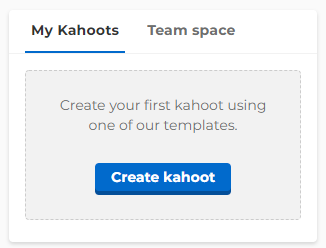
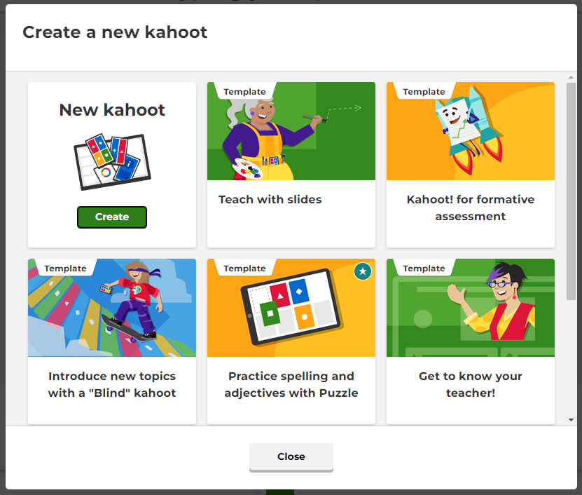
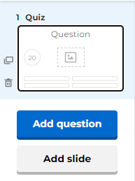
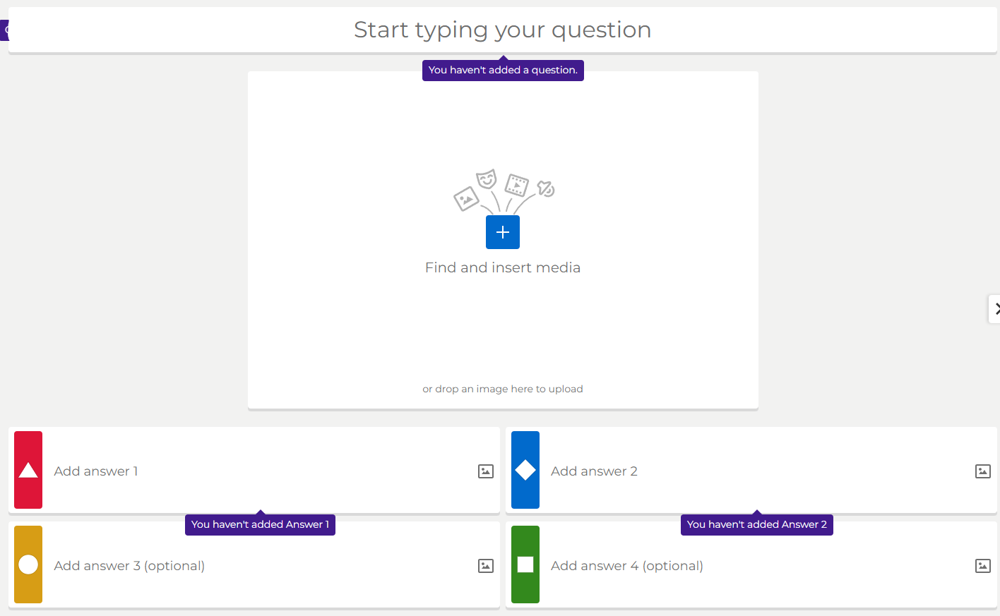
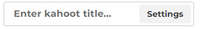
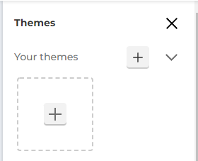

Hoe gebruik ik Kahoot? (quiz)
-

Quiz aanmaken stap 1
Hier kan u uw eerste kahoot zelf maken. Om dit te doen drukt u gewoon op "create kahoot". -

Quiz aanmaken stap 2
Hier kiest u of u een kahoot helemaal zelf wilt aanmaken of een temlpate gebruiken om u te helpen. Voor de tutorial zal ik er zelf een aanmaken. -

Quiz aanmaken stap 3
Hier kan u gemakelijk zien welke slides u al heeft. U kan dan op een slide drukken om deze in het groot te bekijken. U kan ook een slide of een vraag toevoegen met de knoppen eronder. Vragen geven de deelnemers een score als ze correct antwoorden. Een slide is er om informatie te geven over mogelijke volgende vragen. -

Quiz aanmaken stap 4
Hier kan u uw vraag invoegen met optioneel een beeld. Onderaan kan u 2 tot 4 mogelijke aantwoorden invoeren. -

Quiz aanmaken stap 5
Hier kan u de naam van uw kahoot aanpassen. -

Quiz aanmaken stap 6
Hier kan u het thema van uw kahoot aanpassen. U kan een eigen thema uploaden of een preset thema kiezen.